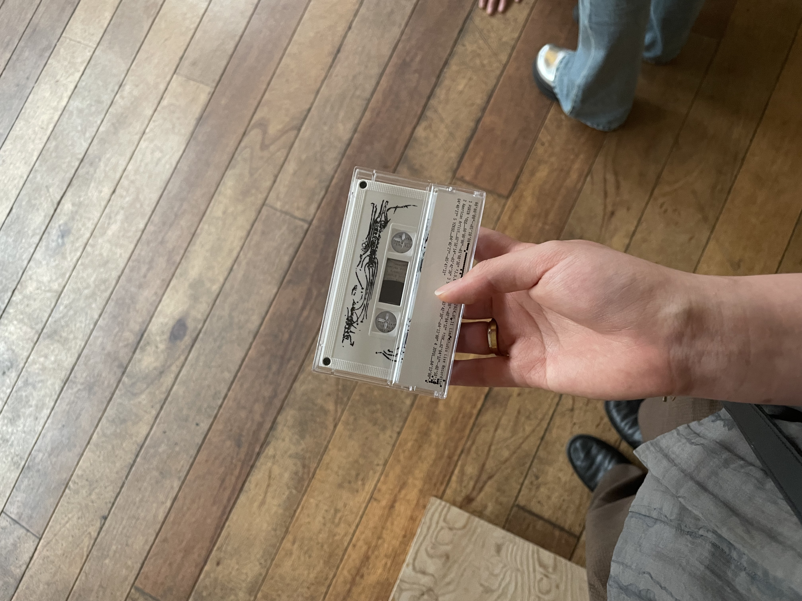
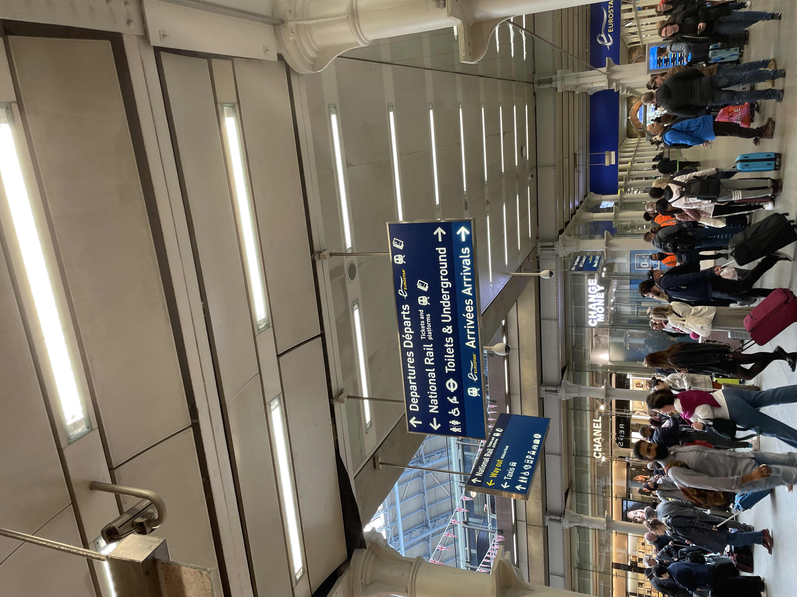
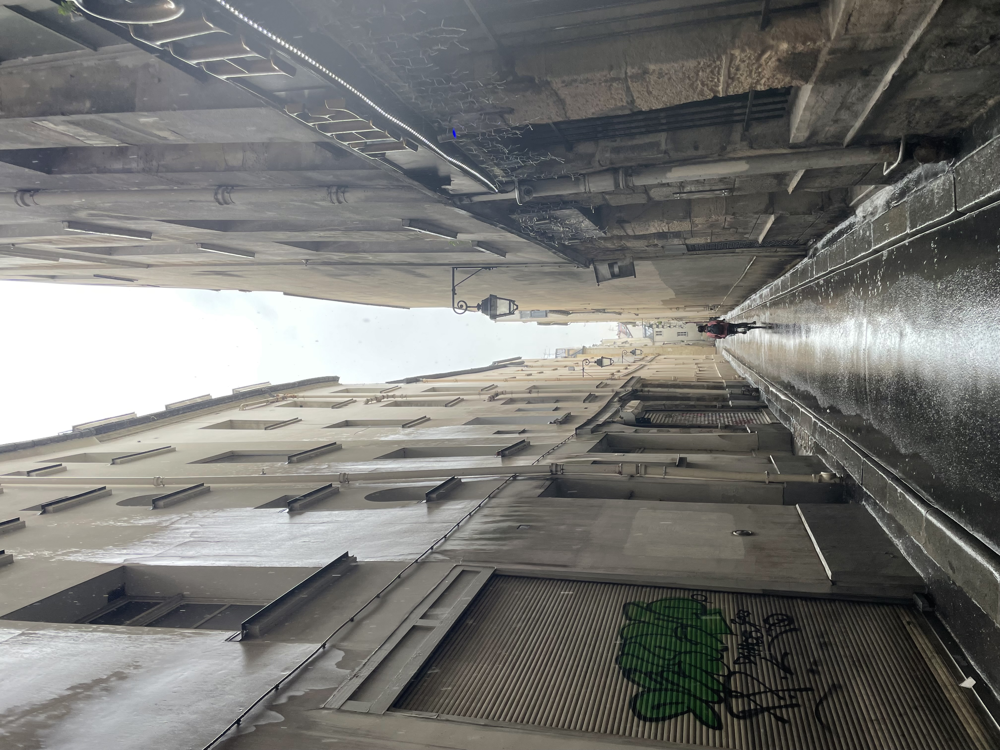
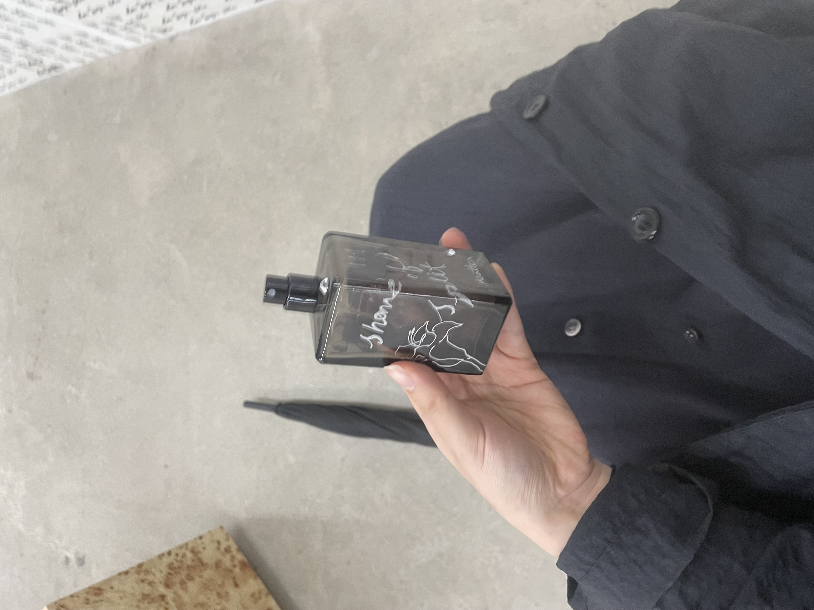
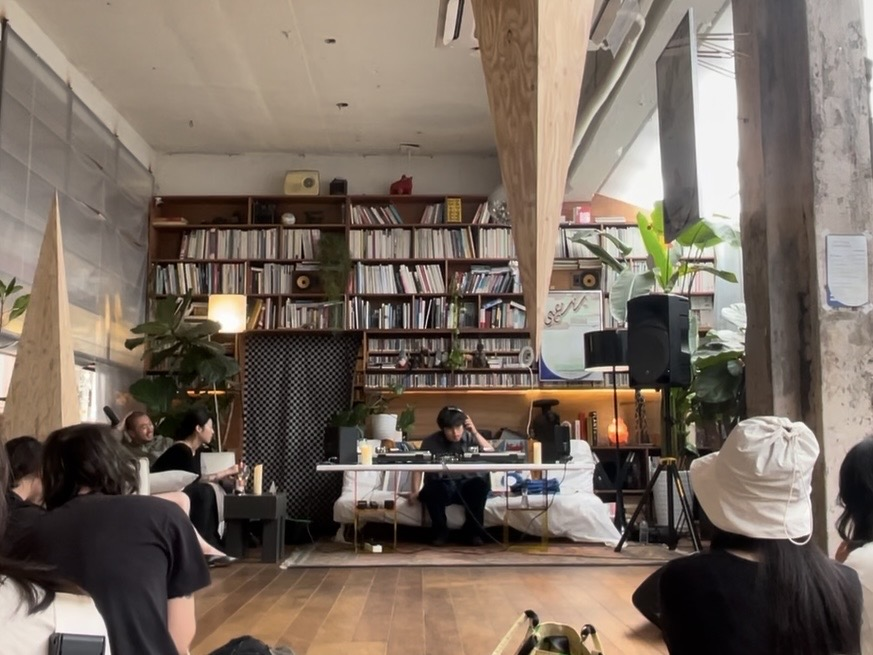
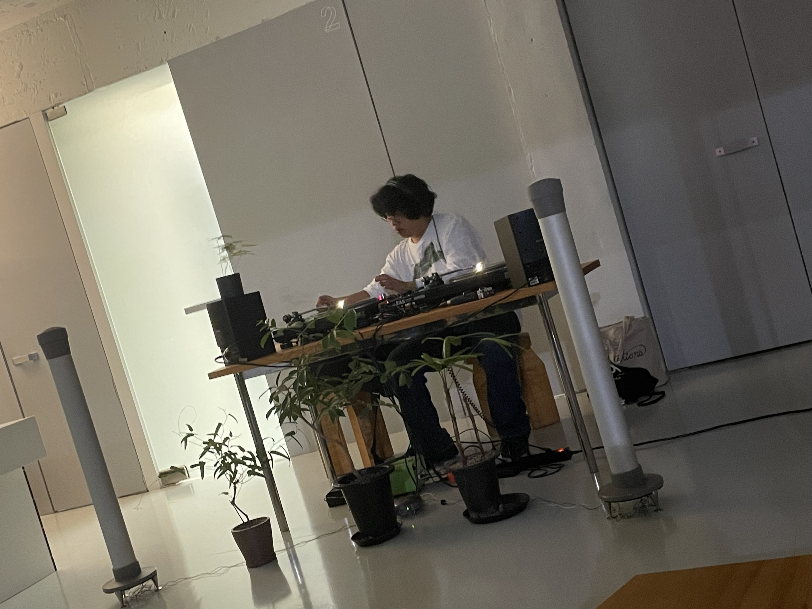
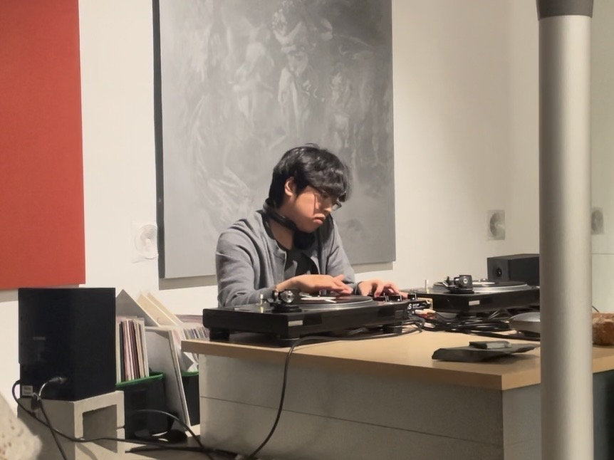

그동안 나의 재생목록은 그저 들었던 노래들의 흔적이 쌓여있는 단순한 무덤에 불과했다. 꽂힌 몇 곡만 주야장천 듣다 질리면 다음 곡을 추가하는 식이었다.
하지만 낯선 곳으로 떠나며 처음으로 목적이 있는 플레이리스트를 짜기 시작했다. 여행지의 풍경과 기분을 상상하며 곡의 순서와 기승전결을 고심해 끄적이는 것. 구글맵과 눈앞의 길이 정녕 같은 길인지 톺아볼 때 그 정성스러운 약간의 소음과 적절한 노래들은 지친 발걸음을 잊게 해주었다. 이 사소하고 치밀한 준비가 '기우제'의 시작이었다.
우리는 때로 타인이 고른 낯선 음악을 경험하며 그 사람이나 공간에 매료되곤 한다. 파리 마레지구 부트카페의 바리스타가 틀어둔 힙합, 편집숍 Chiyagi를 이끄는 'Uma'가 듣던 호텔 라운지 음악, 이태원 동물병원에서 하룻밤만 열린 'Purin'의 음감회 속 낯선 선율까지.
길에서 우연히 주운 노래, 뚜렷한 주관을 가진 사람에게서 옮겨온 노래 혹은 알고리즘이 무심코 건넨 다음 곡. 그 속에서 발견하는 뜻밖의 즐거움이 플레이리스트의 재료가 된다.
마을의 풍년을 기원하며 비를 빌듯, 나는 이제 매달 시작점에서 ‘월간 플레이리스트’를 만든다. 이런 분위기로 한 달을 지내기를 바라면서 이미지를 그려보는 일종의 의례인 셈이다.
매달 이 플레이리스트를 곱씹으며 한 달을 지나고 나면 그간의 기록은 기분 좋은 향수가 된다. 이 노래를 들으며 다음을 기대하기도 하고, 지난 여정의 향수를 떠올리기도 하면서.
어떤 행위가 마침내 '취미'라는 당당한 이름을 얻으려면 눈에 보이는 실체나 결과물이 있어야 한다고 생각한다. 그렇기에 비록 아마추어의 작업물일지라도 눈에 보이는 형태의 결과물로 남기고 공유하려 한다.
근사한 상품 같은 세련됨은 없지만 손수 깎고 소독해 만든 레몬청을 친구에게 건네는 마음처럼. 이곳이 누군가의 한 달에 작은 선물이 되기를 바란다.






